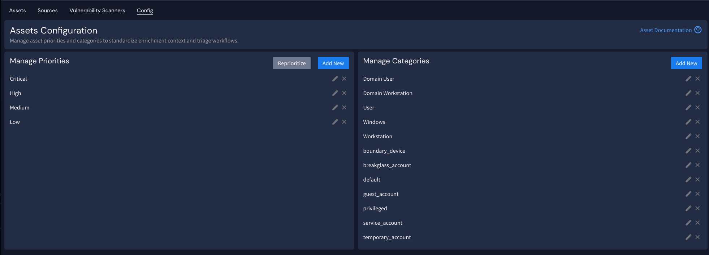
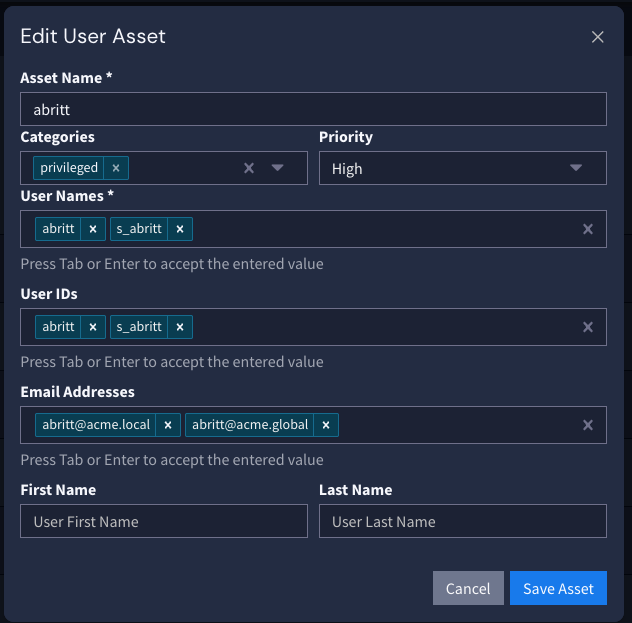

The asset model is a critical piece in making the most of Security Core, defining which users are privileged, default, service, and breakglass to trigger relevant alerts and appear on reports, and defining which devices sit on the network perimeter, which ones house data stores, as well as which devices are critical (such as domain controllers) to apply more context to asset-based risk scoring.
You may choose to import assets from an external source, but you will most likely still need to apply the correct asset categories. It is important to understand the asset categories used by Security Core and their meanings.
| Asset Category | Description |
|---|---|
| default | Identify known "default" or built-in accounts. |
| guest_account | Identify known guest accounts. |
| privileged | Identify known privileged accounts. |
| service_account | Identify known service accounts. |
| temporary | Identify known short-lived accounts. |
| boundary_device | Used to identify "DMZ" / perimeter systems such as web servers etc. |
| temporary_account | Used to identify authorised short-lived devices. |
| breakglass_account | Used to identify accounts which are only used in the event of an emergency. |
To apply asset categories, first ensure the asset configuration includes the required categories. In Graylog 7.0, you must add these manually by navigating to Security > Assets > Configuration, editing the configuration, and adding any required items.

Next, you must create the required assets or import them from a supported external source, then apply the categories to an asset. Here, for example, the "privileged" category is added to the "abritt" asset.

Repeat this process for all monitored assets and the correct categories for both users and machines.